JEE Main 2024 (Session 1), 31 Jan Shift 2: worked solutions for review
Questions and options are NTA’s own images; the green option is NTA’s final key. Every solution below was written by Claude
and checked against NTA’s final key. It is not NTA’s solution. Please mark anything unclear or wrong.
Q1 · Mathematics · MCQ · ID 4058591195
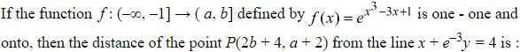
Hint 1: Is x³ − 3x + 1 increasing or decreasing on (−∞, −1]? That tells you the range of f, i.e. a and b.
Hint 2: On x < −1 the derivative 3x² − 3 is positive. At x = −1 the exponent is 3; as x → −∞ it tends to −∞.
What this tests: Range of a function; distance of a point from a line.
1. Range of f = (0, e³], so a = 0, b = e³ and P = (2e³ + 4, 2).
2. Distance from x + e−3y − 4 = 0: |2e³ + 2e−3|/√(1 + e−6).
3. Multiply top and bottom by e³: 2(e⁶ + 1)/√(e⁶ + 1) = 2√(1 + e⁶).
Answer: (3)
If this felt hard: Revise 'Relations and Functions' (one-one, onto) and 'Straight Lines'.
Claude’s answer: 3 · NTA final key: 3 · agrees · Answer recomputed with SymPy (tools/verify_pyq_solutions.py)
Q2 · Mathematics · MCQ · ID 4058591196
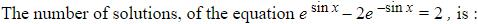
(1) 
(2) 
(3) 
Hint 1: Put u = esin x. Which values can u take?
Hint 2: u − 2/u = 2 gives u² − 2u − 2 = 0. Also u = esin x lies in [1/e, e].
What this tests: Equations with bounded functions.
1. u = 1 + √3 ≈ 2.732 (the other root is negative).
2. But esin x ≤ e ≈ 2.718, so u = 1 + √3 is impossible.
3. No solutions.
Answer: (1)
If this felt hard: Revise 'Trigonometric Functions' and exponential bounds. Always check the range of the substituted variable.
Claude’s answer: 1 · NTA final key: 1 · agrees · Answer recomputed with SymPy (tools/verify_pyq_solutions.py)
Q3 · Mathematics · MCQ · ID 4058591197
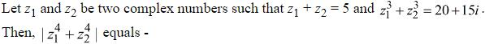
Hint 1: Use s = z1 + z2 and p = z1z2. Write z1³ + z2³ in terms of s and p.
Hint 2: z1³ + z2³ = s³ − 3ps. Then z1⁴ + z2⁴ = (s² − 2p)² − 2p².
What this tests: Symmetric functions of two complex numbers.
1. 125 − 15p = 20 + 15i, so p = 7 − i.
2. s² − 2p = 11 + 2i; (11 + 2i)² = 117 + 44i; 2p² = 2(48 − 14i) = 96 − 28i.
3. z1⁴ + z2⁴ = 21 + 72i, modulus √(441 + 5184) = 75.
Answer: (4)
If this felt hard: Revise 'Complex Numbers' and identities for sums of powers.
Claude’s answer: 4 · NTA final key: 4 · agrees · Answer recomputed with SymPy (tools/verify_pyq_solutions.py)
Q4 · Mathematics · MCQ · ID 4058591198
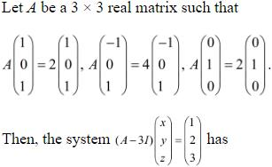
Hint 1: The given equations say the three vectors are eigenvectors of A. What are the eigenvalues of A − 3I?
Hint 2: Eigenvalues of A: 2, 4, 2 with independent eigenvectors. A − 3I has eigenvalues −1, 1, −1.
What this tests: Eigenvalues and invertibility (consistency of systems).
1. None of the eigenvalues of A − 3I is 0, so det(A − 3I) = (−1)(1)(−1) = 1 ≠ 0.
2. A − 3I is invertible: the system has a unique solution.
Answer: (3)
If this felt hard: Revise 'Matrices' and 'Determinants'.
Claude’s answer: 3 · NTA final key: 3 · agrees · Answer recomputed with SymPy (tools/verify_pyq_solutions.py)
Q5 · Mathematics · MCQ · ID 4058591199
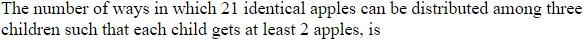
(3) 
Hint 1: Give each child 2 apples first. How many are left to share freely?
Hint 2: 15 apples among 3 children with no restriction: stars and bars, C(15 + 2, 2).
What this tests: Distributing identical objects (stars and bars).
1. C(17, 2) = 136.
Answer: (2)
If this felt hard: Revise 'Permutations and Combinations'.
Claude’s answer: 2 · NTA final key: 2 · agrees · Answer recomputed with SymPy (tools/verify_pyq_solutions.py)
Q6 · Mathematics · MCQ · ID 4058591200
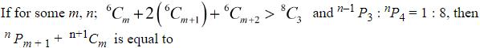
Hint 1: Combine the left side with Pascal's rule twice. For the second condition, write both P's with factorials.
Hint 2: ⁶Cm + 2⁶Cm+1 + ⁶Cm+2 = ⁸Cm+2. And ⁽ⁿ⁻¹⁾P3/ⁿP4 = 1/n.
What this tests: Pascal's rule; permutations and combinations formulas.
1. ⁸Cm+2 > ⁸C3 = 56 with m + 2 ≤ 6 (for ⁶Cm+2): only m + 2 = 4, so m = 2.
2. 1/n = 1/8, so n = 8.
3. ⁸P3 + ⁹C2 = 336 + 36 = 372.
Answer: (1)
If this felt hard: Revise 'Permutations and Combinations' and 'Binomial Theorem' (Pascal's rule).
Claude’s answer: 1 · NTA final key: 1 · agrees · Answer recomputed with SymPy (tools/verify_pyq_solutions.py)
Q7 · Mathematics · MCQ · ID 4058591201
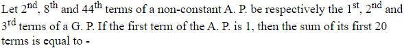
(1) 
Hint 1: Write the 2nd, 8th and 44th terms with a = 1 and difference d. Three numbers in GP: middle² = product of the ends.
Hint 2: (1 + 7d)² = (1 + d)(1 + 43d).
What this tests: AP terms forming a GP.
1. 14d + 49d² = 44d + 43d², so 6d² = 30d and d = 5 (d ≠ 0).
2. S20 = 10(2 + 19 × 5) = 970.
Answer: (2)
If this felt hard: Revise 'Sequences and Series'.
Claude’s answer: 2 · NTA final key: 2 · agrees · Answer recomputed with SymPy (tools/verify_pyq_solutions.py)
Q8 · Mathematics · MCQ · ID 4058591202
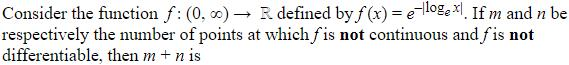
(1) 
(2) 
(3) 
(4) 
Hint 1: Write f without the modulus: what is f for x < 1 and for x ≥ 1?
Hint 2: For x < 1, |ln x| = −ln x, so f(x) = x. For x ≥ 1, f(x) = 1/x.
What this tests: Continuity and differentiability with modulus.
1. Both pieces equal 1 at x = 1, so f is continuous everywhere: m = 0.
2. Slopes at x = 1: 1 from the left, −1 from the right. Not differentiable only there: n = 1.
3. m + n = 1.
Answer: (2)
If this felt hard: Revise 'Continuity and Differentiability'.
Claude’s answer: 2 · NTA final key: 2 · agrees · Answer recomputed with SymPy (tools/verify_pyq_solutions.py)
Q9 · Mathematics · MCQ · ID 4058591203
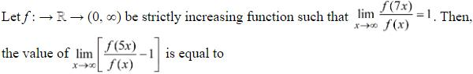
(1) 
(4) 
Hint 1: f is increasing and positive. Where does f(5x) sit compared with f(x) and f(7x)?
Hint 2: f(x) ≤ f(5x) ≤ f(7x), so 1 ≤ f(5x)/f(x) ≤ f(7x)/f(x).
What this tests: Sandwich theorem for limits.
1. The right side tends to 1, so f(5x)/f(x) → 1 (sandwich theorem).
2. The limit is 1 − 1 = 0.
Answer: (4)
If this felt hard: Revise 'Limits and Derivatives'.
Claude’s answer: 4 · NTA final key: 4 · agrees · Answer recomputed with SymPy (tools/verify_pyq_solutions.py)
Q10 · Mathematics · MCQ · ID 4058591204
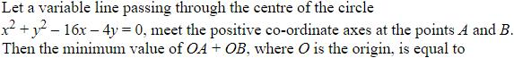
(1) 
(2) 
(3) 
Hint 1: Write the line in intercept form x/a + y/b = 1 and make it pass through the centre.
Hint 2: Centre (8, 2): 8/a + 2/b = 1. Minimise a + b.
What this tests: Minimising intercept sums (Cauchy–Schwarz / calculus).
1. (a + b)(8/a + 2/b) ≥ (√8 + √2)² by Cauchy–Schwarz.
2. Minimum a + b = (2√2 + √2)² = 18.
Answer: (2)
If this felt hard: Revise 'Straight Lines' and 'Application of Derivatives'.
Claude’s answer: 2 · NTA final key: 2 · agrees · Answer recomputed with SymPy (tools/verify_pyq_solutions.py)
Q11 · Mathematics · MCQ · ID 4058591205
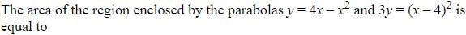
(2) 
(4) 
Hint 1: Find where the parabolas meet, then integrate the top curve minus the bottom one.
Hint 2: 4x − x² = (x − 4)²/3 gives x² − 5x + 4 = 0, so x = 1, 4.
What this tests: Area between two parabolas.
1. Area = ∫14 (4x − x² − (x − 4)²/3) dx = (4/3)∫14 (−x² + 5x − 4) dx.
2. ∫14 (−x² + 5x − 4) dx = 9/2.
3. Area = (4/3)(9/2) = 6.
Answer: (2)
If this felt hard: Revise 'Application of Integrals'.
Claude’s answer: 2 · NTA final key: 2 · agrees · Answer recomputed with SymPy (tools/verify_pyq_solutions.py)
Q12 · Mathematics · MCQ · ID 4058591206
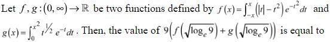
(1) 
(2) 
(3) 
(4) 
Hint 1: f's integrand has an even part: write f as 2∫0x. For g, substitute t = u².
Hint 2: f(x) = 2∫0x (t − t²)e−t² dt and g(x) = ∫0x 2u² e−u² du.
What this tests: Definite integrals with substitution and symmetry.
1. f(x) + g(x) = 2∫0x t e−t² dt = 1 − e−x².
2. With x² = ln 9: 1 − 1/9 = 8/9.
3. 9 × 8/9 = 8.
Answer: (1)
If this felt hard: Revise 'Integrals'.
Claude’s answer: 1 · NTA final key: 1 · agrees · Answer recomputed with SymPy (tools/verify_pyq_solutions.py)
Q13 · Mathematics · MCQ · ID 4058591207
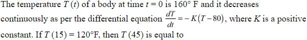
Hint 1: This is Newton's law of cooling: T − 80 decays exponentially.
Hint 2: T − 80 = 80e−Kt. T(15) = 120 gives e−15K = 1/2.
What this tests: Exponential decay (Newton's law of cooling).
1. T(45) − 80 = 80(1/2)³ = 10.
2. T(45) = 90 °F.
Answer: (3)
If this felt hard: Revise 'Differential Equations'.
Claude’s answer: 3 · NTA final key: 3 · agrees · Answer recomputed with SymPy (tools/verify_pyq_solutions.py)
Q14 · Mathematics · MCQ · ID 4058591208
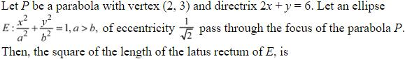
Hint 1: The vertex is midway between the focus and the directrix. Find the foot of the perpendicular from the vertex to the directrix first.
Hint 2: Distance from (2, 3) to 2x + y = 6 is 1/√5 along (2, 1)/√5. The focus is the same distance on the other side: (2, 3) + (1/5)(2, 1). With e² = 1/2, b² = a²/2.
What this tests: Parabola focus from vertex and directrix; ellipse latus rectum.
1. Focus = (12/5, 16/5).
2. On the ellipse: x² + 2y² = a², so a² = 144/25 + 512/25 = 656/25 and b² = a²/2.
3. (Latus rectum)² = 4b⁴/a² = a² = 656/25.
Answer: (3)
If this felt hard: Revise 'Conic Sections'.
Claude’s answer: 3 · NTA final key: 3 · agrees · Answer recomputed with SymPy (tools/verify_pyq_solutions.py)
Q15 · Mathematics · MCQ · ID 4058591209
(1)
(2)
(3)
(4)
Hint 1: The centroid divides the line from the circumcentre to the orthocentre in the ratio 1 : 2 (Euler line).
Hint 2: G = (2O + H)/3 with O = (3, 4), H = (−6, −8). Then move from P along the direction (2, 1) of x − 2y − 1 = 0 until you hit the line.
What this tests: Euler line; distance measured along a given direction.
1. G = (0, 0), so a = b = 0 and P = (3, 5).
2. P + t(2, 1) on 2x + 3y − 4 = 0: 17 + 7t = 0, t = −17/7.
3. Distance = |t| × √5 = 17√5/7.
Answer: (2)
If this felt hard: Revise 'Straight Lines'.
Claude’s answer: 2 · NTA final key: 2 · agrees · Answer recomputed with SymPy (tools/verify_pyq_solutions.py)
Q16 · Mathematics · MCQ · ID 4058591210
(1)
(2)
(3)
(4)
Hint 1: Find the foot of the perpendicular F from the point to the line. The image is 2F − P.
Hint 2: Line point (1, 2, 3) + t(2, 3, 4). t = ((1, 1, 2)·(2, 3, 4))/29 = 13/29.
What this tests: Image of a point in a line.
1. F = (1 + 26/29, 2 + 39/29, 3 + 52/29).
2. Image = 2F − P = (52/29, 1 + 78/29, 1 + 104/29).
3. 2α + 3β + 4γ = 7 + (104 + 234 + 416)/29 = 7 + 26 = 33.
Answer: (3)
If this felt hard: Revise 'Three Dimensional Geometry'.
Claude’s answer: 3 · NTA final key: 3 · agrees · Answer recomputed with SymPy (tools/verify_pyq_solutions.py)
Q17 · Mathematics · MCQ · ID 4058591211
(1)
(2)
(3)
(4)
Hint 1: L2 passes through A and B, so its direction is AB. Check that AB really is perpendicular to the given line.
Hint 2: AB = (3, 2, 0); (3, 2, 0)·(−2, 3, 1) = 0. SD = |(A − P)·(d1 × d2)|/|d1 × d2| with P = (1, −1, −4), d1 = (2, −3, 2).
What this tests: Shortest distance between skew lines.
1. d1 × d2 = (2, −3, 2) × (3, 2, 0) = (−4, 6, 13), length √221.
2. A − P = (−5, 5, 7); dot product = 20 + 30 + 91 = 141.
3. SD = 141/√221.
Answer: (4)
If this felt hard: Revise 'Three Dimensional Geometry'.
Claude’s answer: 4 · NTA final key: 4 · agrees · Answer recomputed with SymPy (tools/verify_pyq_solutions.py)
Q18 · Mathematics · MCQ · ID 4058591212
(1)
(2)
(3)
(4)
Hint 1: Use the mean for a + b and the variance for a² + b².
Hint 2: Sum = 330, so a + b = 110. Σx² = 6(194 + 55²) = 19314.
What this tests: Mean and variance with unknown values.
1. a² + b² = 19314 − 12464 = 6850, so ab = (12100 − 6850)/2 = 2625.
2. a, b are roots of t² − 110t + 2625 = 0: 75 and 35. a = 75, b = 35.
3. a + 3b = 180.
Answer: (1)
If this felt hard: Revise 'Statistics'.
Claude’s answer: 1 · NTA final key: 1 · agrees · Answer recomputed with SymPy (tools/verify_pyq_solutions.py)
Q19 · Mathematics · MCQ · ID 4058591213
(1)
(2)
(3)
(4)
Hint 1: P(H) = 2P(T) and P(H) + P(T) = 1.
Hint 2: P(T) = 1/3, P(H) = 2/3. Use the binomial distribution.
What this tests: Binomial probability with a biased coin.
1. P = C(3, 2)(1/3)²(2/3) = 6/27 = 2/9.
Answer: (4)
If this felt hard: Revise 'Probability'.
Claude’s answer: 4 · NTA final key: 4 · agrees · Answer recomputed with SymPy (tools/verify_pyq_solutions.py)
Q20 · Mathematics · MCQ · ID 4058591214
(1) 
(2)
(3)
(4)
Hint 1: 5 radians is not in the principal range of sin−1 or cos−1. Shift it into range.
Hint 2: sin−1(sin 5) needs an angle in [−π/2, π/2] with the same sine: 5 − 2π. cos−1(cos 5) needs an angle in [0, π]: 2π − 5.
What this tests: Principal values of inverse trigonometric functions.
1. a = 5 − 2π, b = 2π − 5.
2. a² + b² = 2(2π − 5)² = 8π² − 40π + 50.
Answer: (4)
If this felt hard: Revise 'Inverse Trigonometric Functions'.
Claude’s answer: 4 · NTA final key: 4 · agrees · Answer recomputed with SymPy (tools/verify_pyq_solutions.py)
Q21 · Mathematics · Numerical · ID 4058591215
Hint 1: List the pairs in R: 2x = 3y means x = 3k, y = 2k.
Hint 2: x = 3k ≤ 100 gives k = 1, …, 33. The smallest symmetric relation containing R adds each reversed pair.
What this tests: Symmetric closure of a relation.
1. R has 33 pairs, none of the form (a, a).
2. Adding the 33 reverses gives n = 66.
Answer: 66
If this felt hard: Revise 'Relations and Functions'.
Claude’s answer: 66 · NTA final key: 66 · agrees · Answer recomputed with SymPy (tools/verify_pyq_solutions.py)
Q22 · Mathematics · Numerical · ID 4058591216
Hint 1: For a 3 × 3 matrix, det(adj A) = (det A)². What happens after k adjoints?
Hint 2: After k adjoints the determinant is 22^k. So n = 22^{2024}. Powers of 2 mod 9 repeat every 6.
What this tests: Determinant of adjoint; modular arithmetic.
1. 22024 mod 6: powers of 2 (from 2¹) alternate 2, 4 mod 6; even exponent gives 4.
2. n ≡ 2⁴ = 16 ≡ 7 (mod 9).
Answer: 7
If this felt hard: Revise 'Determinants' (adjoint) and remainders of large powers.
Claude’s answer: 7 · NTA final key: 7 · agrees · Answer recomputed with SymPy (tools/verify_pyq_solutions.py)
Q23 · Mathematics · Numerical · ID 4058591217
Hint 1: The sum of all coefficients of a polynomial is its value at x = 1.
Hint 2: At x = 1 the sum is 4n−1 + 4n−2·3 + … + 3n−1, a GP-type sum equal to (4ⁿ − 3ⁿ)/(4 − 3).
What this tests: Sum of coefficients; aⁿ − bⁿ factorisation.
1. Σαr = 4ⁿ − 3ⁿ, so β = 4, γ = 3.
2. β² + γ² = 25.
Answer: 25
If this felt hard: Revise 'Binomial Theorem' and 'Sequences and Series'.
Claude’s answer: 25 · NTA final key: 25 · agrees · Answer recomputed with SymPy (tools/verify_pyq_solutions.py)
Q24 · Mathematics · Numerical · ID 4058591218
Hint 1: Write the quadratic as a sum of two squares. When can a sum of squares be 0?
Hint 2: (ax − b)² + (bx − c)² = 0, so x = b/a = c/b: the sides are a, ax, ax².
What this tests: Sum of squares equal to zero; triangle inequality.
1. Triangle inequalities: 1 + x > x² and x + x² > 1 (the third always holds).
2. (√5 − 1)/2 < x < (√5 + 1)/2, so α² + β² = 3.
3. 12 × 3 = 36.
Answer: 36
If this felt hard: Revise 'Quadratic Equations' and 'Sequences and Series' (GP).
Claude’s answer: 36 · NTA final key: 36 · agrees · Answer recomputed with SymPy (tools/verify_pyq_solutions.py)
Q25 · Mathematics · Numerical · ID 4058591219
Hint 1: The denominator behaves like x³. Expand the numerator up to x³: the x and x² terms must vanish.
Hint 2: Numerator = (c − b)x + (a + b/2 − c)x² + (a − b/3 + c/2)x³ + …
What this tests: Limits with series expansions.
1. c = b, a = b/2, and a − b/3 + c/2 = 1 gives (2/3)b = 1.
2. b = c = 3/2, a = 3/4.
3. 16(9/16 + 9/4 + 9/4) = 9 + 36 + 36 = 81.
Answer: 81
If this felt hard: Revise 'Limits and Derivatives'.
Claude’s answer: 81 · NTA final key: 81 · agrees · Answer recomputed with SymPy (tools/verify_pyq_solutions.py)
Q26 · Mathematics · Numerical · ID 4058591220
Hint 1: Use x → π − x. sin x cos x changes sign. Then do the same trick once more on [0, π/2].
Hint 2: With f = sin x cos x/(sin⁴x + cos⁴x): I = π∫0π x f dx and ∫0π x f dx = −(π/2)∫0π/2 f dx. Put u = tan²x for the last integral.
What this tests: Definite integrals with the king property.
1. ∫0π/2 f dx = (1/2)∫0∞ du/(1 + u²) = π/4.
2. ∫0π x f dx = −π²/8, so I = −π³/8.
3. |120 I/π³| = 15.
Answer: 15
If this felt hard: Revise 'Integrals' (properties of definite integrals).
Claude’s answer: 15 · NTA final key: 15 · agrees · Answer recomputed with SymPy (tools/verify_pyq_solutions.py)
Q27 · Mathematics · Numerical · ID 4058591221
Hint 1: Treat x as a function of y and put t = tan x.
Hint 2: dt/dy = −(e2yt² + t): a Bernoulli equation. Put w = 1/t: dw/dy − w = e2y.
What this tests: Bernoulli differential equation.
1. w = e2y + Cey. At y = 0, x = π/4: w = 1, so C = 0. So cot x = e2y.
2. At x = π/6: e2α = √3.
3. e8α = (√3)⁴ = 9.
Answer: 9
If this felt hard: Revise 'Differential Equations'.
Claude’s answer: 9 · NTA final key: 9 · agrees · Answer recomputed with SymPy (tools/verify_pyq_solutions.py)
Q28 · Mathematics · Numerical · ID 4058591222
Hint 1: In parallelogram ABCD the diagonals bisect each other, so A + C = B + D.
Hint 2: α = γ + 3 and β = δ + 1. Put these into the two line equations.
What this tests: Parallelogram vertices from midpoint conditions.
1. 2(γ + 3) − (δ + 1) = 5 gives δ = 2γ.
2. 3γ − 2δ = 6 gives −γ = 6, so γ = −6, δ = −12, α = −3, β = −11.
3. |α + β + γ + δ| = 32.
Answer: 32
If this felt hard: Revise 'Straight Lines'.
Claude’s answer: 32 · NTA final key: 32 · agrees · Answer recomputed with SymPy (tools/verify_pyq_solutions.py)
Q29 · Mathematics · Numerical · ID 4058591223
Hint 1: Move 21 units from A along the unit vector of AB (either way) and keep the point with non-negative coordinates.
Hint 2: AB = (12, 4, 6), length 14, unit vector (6, 2, 3)/7. 21 units along it is (18, 6, 9).
What this tests: Points on a line at a given distance.
1. P = (22, 0, 7) (the other choice has negative coordinates).
2. PQ = (18, 12, 4), |PQ| = √484 = 22.
Answer: 22
If this felt hard: Revise 'Three Dimensional Geometry'.
Claude’s answer: 22 · NTA final key: 22 · agrees · Answer recomputed with SymPy (tools/verify_pyq_solutions.py)
Q30 · Mathematics · Numerical · ID 4058591224
Hint 1: Write c = (c1, c2, c3) and turn both conditions into linear equations.
Hint 2: a + b = (5, 1, 4), a × b = (7, −7, −7), a − b + î = (2, 3, −2).
What this tests: Vector equations with cross and dot products.
1. (5, 1, 4) × c = (14, 10, −20): c3 − 4c2 = 14, 4c1 − 5c3 = 10, 5c2 − c1 = −20.
2. With 2c1 + 3c2 − 2c3 = −3: c = (5, −3, 2).
3. |c|² = 25 + 9 + 4 = 38.
Answer: 38
If this felt hard: Revise 'Vector Algebra'.
Claude’s answer: 38 · NTA final key: 38 · agrees · Answer recomputed with SymPy (tools/verify_pyq_solutions.py)
Q31 · Physics · MCQ · ID 4058591225
(1)
(2)
(3)
(4)
Hint 1: B is subtracted from x², so it has the dimension of length². Then find A from E = (B − x²)/(At).
Hint 2: [B] = L². [A] = L²/([E]T) = L²/(ML²T−2 · T).
What this tests: Dimensional analysis.
1. [A] = M−1T.
2. [AB] = L²M−1T.
Answer: (2)
If this felt hard: Revise 'Units and Measurements'.
Claude’s answer: 2 · NTA final key: 2 · agrees · Answer recomputed with SymPy (tools/verify_pyq_solutions.py)
Q32 · Physics · MCQ · ID 4058591226
(1)
(2)
(3)
(4)
Hint 1: Use |A + B|² = A² + B² + 2AB cos θ with A = B = R.
Hint 2: |A + B|² = 2R²(1 + cos θ) = 4R²cos²(θ/2).
What this tests: Vector addition (resultant of equal vectors).
1. |A + B| = 2R cos(θ/2).
2. (Also |A − B| = 2R sin(θ/2), so the other options are wrong.)
Answer: (3)
If this felt hard: Revise 'Motion in a Plane' (vectors).
Claude’s answer: 3 · NTA final key: 3 · agrees · Answer recomputed with SymPy (tools/verify_pyq_solutions.py)
Q33 · Physics · MCQ · ID 4058591227
(1)
(2)
(3)
(4)
Hint 1: Atwood machine: a = (m1 − m2)g/(m1 + m2).
Hint 2: (m1 − m2)/(m1 + m2) = 1/8.
What this tests: Atwood machine.
1. 8m1 − 8m2 = m1 + m2, so 7m1 = 9m2.
2. m1/m2 = 9/7.
Answer: (4)
If this felt hard: Revise 'Laws of Motion'.
Claude’s answer: 4 · NTA final key: 4 · agrees · Answer recomputed with SymPy (tools/verify_pyq_solutions.py)
Q34 · Physics · ID 4058591228
Left out of the bank: dropped (NTA).
Q35 · Physics · MCQ · ID 4058591229
(1)
(2)
(3)
(4)
Hint 1: Find the velocity by integrating a = F/m from rest, then P = F · v.
Hint 2: a = (3t, 3t²), so v = (3t²/2, t³).
What this tests: Power with a time-varying force.
1. P = 6t × (3t²/2) + 6t² × t³ = 9t³ + 6t⁵ W.
Answer: (4)
If this felt hard: Revise 'Work, Energy and Power'.
Claude’s answer: 4 · NTA final key: 4 · agrees · Answer recomputed with SymPy (tools/verify_pyq_solutions.py)
Note: Assumes the body starts from rest.
Q36 · Physics · MCQ · ID 4058591230
(1)
(2)
(3)
(4)
Hint 1: Escape velocity = √(2GM/R). How does it scale?
Hint 2: v ∝ √(M/R). M/R for the moon = (1/144)/(1/16) of the planet's.
What this tests: Escape velocity.
1. vmoon = v√(1/9) = v/3.
Answer: (4)
If this felt hard: Revise 'Gravitation'.
Claude’s answer: 4 · NTA final key: 4 · agrees · Answer recomputed with SymPy (tools/verify_pyq_solutions.py)
Q37 · Physics · MCQ · ID 4058591231
(1)
(2)
(3)
(4)
Hint 1: At terminal velocity, weight = viscous drag 6πηrv (buoyancy is negligible here). What stays the same: the mass or the density?
Hint 2: Same mass, so the weight is the same. 6πηrv = mg gives v ∝ 1/r.
What this tests: Terminal velocity (Stokes' law).
1. Doubling r halves v: v/2.
2. (A common slip is v ∝ r², which holds only for balls of the same density.)
Answer: (1)
If this felt hard: Revise 'Mechanical Properties of Fluids'.
Claude’s answer: 1 · NTA final key: 1 · agrees · Answer recomputed with SymPy (tools/verify_pyq_solutions.py)
Q38 · Physics · MCQ · ID 4058591232
(1)
(2)
(3)
(4)
Hint 1: Use Laplace's formula v = √(γRT/M). Use SI units for M.
Hint 2: T = 273 K, M = 0.032 kg/mol.
What this tests: Speed of sound in a gas.
1. v = √(1.4 × 8.3 × 273/0.032) = √99134 ≈ 315 m/s.
2. The nearest option is 310 m/s.
Answer: (4)
If this felt hard: Revise 'Waves'.
Claude’s answer: 4 · NTA final key: 4 · agrees · Answer recomputed with SymPy (tools/verify_pyq_solutions.py)
Note: The exact value is about 315 m/s; NTA's key (310 m/s) is the nearest option.
Q39 · Physics · MCQ · ID 4058591233
(1)
(2)
(3)
(4)
Hint 1: Internal energy = (f/2)nRT. Argon is monoatomic (f = 3), oxygen diatomic (f = 5, no vibration).
Hint 2: U = 8 × (3/2)RT + 6 × (5/2)RT.
What this tests: Internal energy of a gas mixture (equipartition).
1. U = 12RT + 15RT = 27RT.
Answer: (2)
If this felt hard: Revise 'Kinetic Theory'.
Claude’s answer: 2 · NTA final key: 2 · agrees · Answer recomputed with SymPy (tools/verify_pyq_solutions.py)
Q40 · Physics · MCQ · ID 4058591234
(1)
(2)
(3)
(4)
Hint 1: Coulomb force in a medium: F = q1q2/(4πε0Kr²).
Hint 2: K = 5 divides the force by 5; r → r/5 multiplies it by 25.
What this tests: Coulomb's law in a dielectric.
1. F' = 25F/5 = 5F.
Answer: (2)
If this felt hard: Revise 'Electric Charges and Fields'.
Claude’s answer: 2 · NTA final key: 2 · agrees · Answer recomputed with SymPy (tools/verify_pyq_solutions.py)
Q41 · Physics · MCQ · ID 4058591235
(1)
(2)
(3)
(4)
Hint 1: Illumination is proportional to the power, and P = I²R.
Hint 2: New current = 0.8I, so new power = 0.64P.
What this tests: Power in a resistor.
1. Decrease = 36%.
Answer: (1)
If this felt hard: Revise 'Current Electricity'.
Claude’s answer: 1 · NTA final key: 1 · agrees · Answer recomputed with SymPy (tools/verify_pyq_solutions.py)
Q42 · Physics · MCQ · ID 4058591236
(1)
(2)
(3)
(4)
Hint 1: Find the magnetic moment vector m = IA n̂. Which way does n̂ point for anticlockwise current seen from −X?
Hint 2: Anticlockwise when viewed from the negative X side means n̂ = −x̂. τ = m × B.
What this tests: Torque on a current loop.
1. m = 5 × 0.2 × 0.1 = 0.1 A m², along −x̂.
2. τ = 0.1(−x̂) × 2 × 10−3ŷ = −2 × 10−4 ẑ N m.
3. 2 × 10−4 N m along negative Z.
Answer: (2)
If this felt hard: Revise 'Moving Charges and Magnetism'.
Claude’s answer: 2 · NTA final key: 2 · agrees · Answer recomputed with SymPy (tools/verify_pyq_solutions.py)
Q43 · Physics · MCQ · ID 4058591237
(1)
(2)
(3)
(4)
Hint 1: Average power in AC = VrmsIrms cos φ = (1/2)V0I0 cos φ.
Hint 2: V0 = 20, I0 = 10, φ = π/3.
What this tests: Power in AC circuits (power factor).
1. P = (1/2) × 20 × 10 × (1/2) = 50 W.
Answer: (3)
If this felt hard: Revise 'Alternating Current'.
Claude’s answer: 3 · NTA final key: 3 · agrees · Answer recomputed with SymPy (tools/verify_pyq_solutions.py)
Q44 · Physics · MCQ · ID 4058591238
(1)
(2)
(3)
(4)
Hint 1: In an EM wave, how do the average electric and magnetic energy densities compare? Do EM waves carry momentum?
Hint 2: uE = uB on average. Momentum p = U/c, so radiation exerts pressure.
What this tests: Energy and momentum of EM waves.
1. Statement I: energy is shared equally: correct.
2. Statement II: radiation pressure exists: correct.
Answer: (1)
If this felt hard: Revise 'Electromagnetic Waves'.
Claude’s answer: 1 · NTA final key: 1 · agrees · Theory question: not computable, needs a teacher’s review
Q45 · Physics · MCQ · ID 4058591239
(1)
(2)
(3)
(4)
Hint 1: Completely polarised reflected light means Brewster's angle. What is the angle between reflected and refracted rays then?
Hint 2: At Brewster's angle the reflected and refracted rays are perpendicular: i + r = 90°.
What this tests: Brewster's law.
1. r = 90° − 60° = 30°.
Answer: (1)
If this felt hard: Revise 'Wave Optics'.
Claude’s answer: 1 · NTA final key: 1 · agrees · Answer recomputed with SymPy (tools/verify_pyq_solutions.py)
Q46 · Physics · MCQ · ID 4058591240
(1)
(2) 
(3)
(4)
Hint 1: Compare the new frequency with the threshold frequency.
Hint 2: 1.5ν0 halved is 0.75ν0, below the threshold.
What this tests: Threshold frequency in the photoelectric effect.
1. Below threshold no electrons are emitted, whatever the intensity.
2. Zero.
Answer: (1)
If this felt hard: Revise 'Dual Nature of Radiation and Matter'.
Claude’s answer: 1 · NTA final key: 1 · agrees · Answer recomputed with SymPy (tools/verify_pyq_solutions.py)
Q47 · Physics · MCQ · ID 4058591241
(1)
(2) 
(3) 
(4) 
Hint 1: Nuclear radius R = R0A1/3.
Hint 2: Half the radius means A is divided by 2³ = 8.
What this tests: Nuclear radius and mass number.
1. A = 192/8 = 24.
Answer: (3)
If this felt hard: Revise 'Nuclei'.
Claude’s answer: 3 · NTA final key: 3 · agrees · Answer recomputed with SymPy (tools/verify_pyq_solutions.py)
Q48 · Physics · MCQ · ID 4058591242
(1)
(2)
(3)
(4)
Hint 1: Trace each wire: which signals go into the two OR gates? The final gate has a bubble: it is a NOR.
Hint 2: Top OR: A and B̄. Bottom OR: B (the line after the hop) and Ā (through the lower NOT).
What this tests: Logic gates and Boolean algebra.
1. Y = NOT((A + B̄) + (Ā + B)).
2. (A + Ā) + (B + B̄) = 1 always, so Y = 0 for every input.
Answer: (2)
If this felt hard: Revise 'Semiconductor Electronics' (logic gates).
Claude’s answer: 2 · NTA final key: 2 · agrees · Answer recomputed with SymPy (tools/verify_pyq_solutions.py)
Note: Figure reading: A feeds the lower NOT and the top OR; B feeds the upper NOT and the lower OR (the hop marks B crossing A's wire).
Q49 · Physics · MCQ · ID 4058591243
(1)
(2)
(3)
(4)
Hint 1: The balance condition is X/25 = l/(100 − l). Does the resistance per cm appear in it?
Hint 2: For a uniform wire, the ratio of the two parts' resistances depends only on the lengths.
What this tests: Metre bridge (Wheatstone bridge) balance.
1. Doubling the resistance per cm doubles both parts, so the ratio is unchanged.
2. The balance point stays at 40 cm.
Answer: (4)
If this felt hard: Revise 'Current Electricity'.
Claude’s answer: 4 · NTA final key: 4 · agrees · Answer recomputed with SymPy (tools/verify_pyq_solutions.py)
Q50 · Physics · MCQ · ID 4058591244
(1) 
(2) 
(3) 
(4) 
Hint 1: g = 4π²L/T². How do the relative errors combine?
Hint 2: Δg/g = ΔL/L + 2ΔT/T, with ΔL = 0.2 cm, L = 20 cm, ΔT = 1 s on 40 s.
What this tests: Propagation of errors (simple pendulum).
1. Δg/g = 0.01 + 2 × 0.025 = 0.06 = 6%.
Answer: (1)
If this felt hard: Revise 'Units and Measurements'.
Claude’s answer: 1 · NTA final key: 1 · agrees · Answer recomputed with SymPy (tools/verify_pyq_solutions.py)
Q51 · Physics · Numerical · ID 4058591245
Hint 1: At the highest point the velocity is horizontal. L = m × (horizontal speed) × (height).
Hint 2: Horizontal speed u cos 45° = u/√2. Maximum height H = u² sin²45°/(2g) = u²/(4g).
What this tests: Angular momentum of a projectile.
1. L = m(u/√2)(u²/(4g)) = mu³/(4√2 g) = √2mu³/(8g).
2. X = 8.
Answer: 8
If this felt hard: Revise 'System of Particles and Rotational Motion' and 'Motion in a Plane'.
Claude’s answer: 8 · NTA final key: 8 · agrees · Answer recomputed with SymPy (tools/verify_pyq_solutions.py)
Q52 · Physics · Numerical · ID 4058591246
Hint 1: Each sphere: its own MI about its centre plus the parallel-axis term.
Hint 2: I = 2[(2/5)MR² + Md²] with M = 2 kg, R = 0.5 m, d = 0.75 m.
What this tests: Moment of inertia; parallel axis theorem.
1. One sphere: 0.2 + 1.125 = 1.325 kg m².
2. Two spheres: 2.65 = 53/20 kg m².
Answer: 53
If this felt hard: Revise 'System of Particles and Rotational Motion'.
Claude’s answer: 53 · NTA final key: 53 · agrees · Answer recomputed with SymPy (tools/verify_pyq_solutions.py)
Q53 · Physics · Numerical · ID 4058591247
Hint 1: Find the tension in the wire of an Atwood machine, then strain = T/(AY).
Hint 2: T = 2m1m2g/(m1 + m2). A = π(4 × 10−5)² = 16π × 10−10 m².
What this tests: Atwood machine tension; Young's modulus.
1. T = 2 × 2 × 4 × 10/6 = 80/3 N.
2. Strain = (80/3)/(16π × 10−10 × 2 × 1011) = (80/3)/(320π) = 1/(12π).
3. α = 12.
Answer: 12
If this felt hard: Revise 'Laws of Motion' and 'Mechanical Properties of Solids'.
Claude’s answer: 12 · NTA final key: 12 · agrees · Answer recomputed with SymPy (tools/verify_pyq_solutions.py)
Q54 · Physics · Numerical · ID 4058591248
Hint 1: Combine the springs step by step: the two upper right springs are side by side (parallel), then that pair is in series with the lower one.
Hint 2: Parallel: k + k = 2k. In series with k: (2k × k)/(3k) = 2k/3. That branch is in parallel with the left spring.
What this tests: Spring combinations; SHM period.
1. keff = k + 2k/3 = 5k/3.
2. T = 2π√(3M/(5k)) = π√(12M/(5k)).
3. α = 12.
Answer: 12
If this felt hard: Revise 'Oscillations'.
Claude’s answer: 12 · NTA final key: 12 · agrees · Answer recomputed with SymPy (tools/verify_pyq_solutions.py)
Note: Figure reading: left spring from the ceiling to M; on the right two parallel springs from the ceiling, then one spring down to M.
Q55 · Physics · Numerical · ID 4058591249
Hint 1: The arrangement is two dipoles centred at O. Find the net dipole moment (with direction).
Hint 2: Inner pair: −q at −l, +q at +l, p = 2ql along +x. Outer pair: +2q at −2l, −2q at +2l, p = 8ql along −x. Far-field potential V = kp cos θ/r².
What this tests: Potential of an electric dipole (superposition).
1. Net p = 6ql along −x.
2. At 60° from +x: V = k(−6ql)(1/2)/r² = −3kql/r² = −27 × 10⁹ ql/r².
3. α = 27.
Answer: 27
If this felt hard: Revise 'Electrostatic Potential and Capacitance'.
Claude’s answer: 27 · NTA final key: 27 · agrees · Answer recomputed with SymPy (tools/verify_pyq_solutions.py)
Note: Uses the dipole (far-field) approximation r ≫ l, as the question intends.
Q56 · Physics · Numerical · ID 4058591250
Hint 1: The left and right sides of the square are plain wires. So which corners are really the same point?
Hint 2: Top-left = bottom-left (node L) and top-right = bottom-right (node R). The four slanted resistors meet at the centre.
What this tests: Equivalent resistance (shorted nodes); power.
1. Top 2 Ω and bottom 2 Ω join L to R directly.
2. Through the centre: two 2 Ω in parallel (1 Ω) to the centre, then 1 Ω to R: 2 Ω.
3. 2 ∥ 2 ∥ 2 = 2/3 Ω. With the internal 2/3 Ω: total 4/3 Ω, I = 1.5 A.
4. Power from the battery = EI = 2 × 1.5 = 3 W.
Answer: 3
If this felt hard: Revise 'Current Electricity'. Look for plain wires that join nodes.
Claude’s answer: 3 · NTA final key: 3 · agrees · Answer recomputed with SymPy (tools/verify_pyq_solutions.py)
Note: Figure reading: the square's vertical sides are wires. 'Entire circuit' includes the internal resistance (EI = 3 W); the external network alone takes 1.5 W.
Q57 · Physics · Numerical · ID 4058591251
Hint 1: Find each coil's field at the centre, B = μ0NI/(2R). The coils are perpendicular, so the fields are too.
Hint 2: R = π cm = 0.01π m, N = 100.
What this tests: Field at the centre of a coil; perpendicular fields.
1. BP = 4π × 10−7 × 100 × 1/(0.02π) = 2 mT; BQ = 4 mT.
2. Resultant = √(4 + 16) = √20 mT.
Answer: 20
If this felt hard: Revise 'Moving Charges and Magnetism'.
Claude’s answer: 20 · NTA final key: 20 · agrees · Answer recomputed with SymPy (tools/verify_pyq_solutions.py)
Q58 · Physics · Numerical · ID 4058591252
Hint 1: emf = −dφ/dt. Then I = emf/R.
Hint 2: dφ/dt = 10t − 36.
What this tests: Faraday's law.
1. At t = 2: |emf| = |20 − 36| = 16 V.
2. I = 16/8 = 2 A.
Answer: 2
If this felt hard: Revise 'Electromagnetic Induction'.
Claude’s answer: 2 · NTA final key: 2 · agrees · Answer recomputed with SymPy (tools/verify_pyq_solutions.py)
Q59 · Physics · Numerical · ID 4058591253
Hint 1: Use refraction at a single spherical surface: μ2/v − μ1/u = (μ2 − μ1)/R.
Hint 2: u = −100 cm, R = +20 cm, μ1 = 1, μ2 = 1.5.
What this tests: Refraction at a spherical surface.
1. 1.5/v + 1/100 = 0.5/20, so 1.5/v = 0.015 and v = 100 cm (inside the medium).
2. Distance from the object = 100 + 100 = 200 cm.
Answer: 200
If this felt hard: Revise 'Ray Optics and Optical Instruments'.
Claude’s answer: 200 · NTA final key: 200 · agrees · Answer recomputed with SymPy (tools/verify_pyq_solutions.py)
Q60 · Physics · Numerical · ID 4058591254
Hint 1: R = R0A1/3. What does that make the volume proportional to?
Hint 2: V ∝ R³ ∝ A.
What this tests: Nuclear size and density.
1. V2/V1 = A2/A1 = 4.
Answer: 4
If this felt hard: Revise 'Nuclei'.
Claude’s answer: 4 · NTA final key: 4 · agrees · Answer recomputed with SymPy (tools/verify_pyq_solutions.py)
Q61 · Chemistry · MCQ · ID 4058591255
(1)
(2)
(3)
(4)
Hint 1: On heating, CaCO3 → CaO and MgCO3 → MgO. Write two equations: total mass before and after.
Hint 2: x + y = 2.21; (56/100)x + (40/84)y = 1.152.
What this tests: Stoichiometry of mixtures (thermal decomposition).
1. Solving: x ≈ 1.187 g CaCO3, y ≈ 1.023 g MgCO3.
Answer: (2)
If this felt hard: Revise 'Some Basic Concepts of Chemistry'.
Claude’s answer: 2 · NTA final key: 2 · agrees · Answer recomputed with SymPy (tools/verify_pyq_solutions.py)
Q62 · Chemistry · MCQ · ID 4058591256
(1)
(2)
(3)
(4)
Hint 1: Write potassium's configuration. Which orbital holds its last electron?
Hint 2: K: [Ar] 4s¹.
What this tests: Quantum numbers.
1. 4s: n = 4, l = 0, m = 0, s = +1/2.
Answer: (3)
If this felt hard: Revise 'Structure of Atom'.
Claude’s answer: 3 · NTA final key: 3 · agrees · Theory question: not computable, needs a teacher’s review
Q63 · Chemistry · MCQ · ID 4058591257
(1)
(2)
(3)
(4)
Hint 1: Use Fajans' rules: small, highly polarising cations and cations with a pseudo-noble-gas (d10) shell give more covalent character.
Hint 2: K⁺ and Ba²⁺ are large s-block ions (very ionic). Ag⁺ (4d10) polarises Cl⁻ strongly.
What this tests: Fajans' rules.
1. AgCl has the most covalent character, so it is the least ionic.
Answer: (2)
If this felt hard: Revise 'Chemical Bonding and Molecular Structure'.
Claude’s answer: 2 · NTA final key: 2 · agrees · Theory question: not computable, needs a teacher’s review
Note: CoCl_{2} also has considerable covalent character; NTA's key gives AgCl. Worth a teacher look.
Q64 · Chemistry · MCQ · ID 4058591258
(1)
(2)
(3)
(4)
Hint 1: Start with 1 mol of A. Write the moles of A, B, C at equilibrium and the total.
Hint 2: A: 1 − α, B: α, C: α/2. Total = (2 + α)/2. Partial pressure = (moles/total) × P.
What this tests: Kp in terms of degree of dissociation.
1. Kp = pBpC1/2/pA = [α/(1 − α)] × [αP/(2 + α)]1/2.
2. = α3/2P1/2/((2 + α)1/2(1 − α)).
Answer: (1)
If this felt hard: Revise 'Equilibrium'.
Claude’s answer: 1 · NTA final key: 1 · agrees · Answer recomputed with SymPy (tools/verify_pyq_solutions.py)
Q65 · Chemistry · MCQ · ID 4058591259
(1)
(2)
(3)
(4)
Hint 1: Disproportionation needs an element in an intermediate oxidation state. What is Cl's oxidation state in ClO₄⁻?
Hint 2: S8 (0) → S²⁻ (−2) and S2O3²⁻ (+2) in alkali. Cl in ClO₄⁻ is +7, its maximum.
What this tests: Disproportionation reactions.
1. Statement I is correct.
2. ClO₄⁻ cannot be oxidised further, so it cannot disproportionate: Statement II is incorrect.
Answer: (3)
If this felt hard: Revise 'Redox Reactions'.
Claude’s answer: 3 · NTA final key: 3 · agrees · Theory question: not computable, needs a teacher’s review
Q66 · Chemistry · MCQ · ID 4058591260
(1)
(2) 
(3)
(4)
Hint 1: A' and B' are in the same period (B' to the right); C' and D' are just below them. How do size and metallic character change across a period and down a group?
Hint 2: Across a period: atoms shrink and become less metallic. Down a group: atoms grow and become more metallic.
What this tests: Periodic trends in size and metallic character.
1. Radii: B' < A' and D' < C', with the lower row bigger: B' < A' < D' < C'. A is true.
2. Metallic character follows the same pattern: B is true.
3. C reverses the order: false.
4. Ionic radii of the +1 ions follow the same trend: D is true.
Answer: (1)
If this felt hard: Revise 'Classification of Elements and Periodicity in Properties'.
Claude’s answer: 1 · NTA final key: 1 · agrees · Theory question: not computable, needs a teacher’s review
Note: Assumes the usual case where the lower-row element is larger than the element diagonally above it.
Q67 · Chemistry · MCQ · ID 4058591261
(1)
(2) 
(3) 
(4)
Hint 1: Why do covalent halides like AlCl3 react with water, while ionic ones simply dissolve? What does Al³⁺ become in acidic water?
Hint 2: Covalent group 13 halides are electron deficient and get hydrolysed. In acidified water Al³⁺ exists as [Al(H2O)6]³⁺.
What this tests: Group 13 halides.
1. Statement I: true (covalent nature, easy hydrolysis).
2. Statement II: true; [Al(H2O)6]³⁺ is octahedral.
Answer: (1)
If this felt hard: Revise 'p-Block Elements' (group 13, NCERT).
Claude’s answer: 1 · NTA final key: 1 · agrees · Theory question: not computable, needs a teacher’s review
Q68 · Chemistry · MCQ · ID 4058591262
(1) 
(2) 
(3) 
(4) 
Hint 1: Check each against NCERT group 16: oxides, oxidising/reducing behaviour of SO2 and TeO2, the hydride trend, and O3's Lewis structure.
Hint 2: NCERT: EO2 and EO3 oxides are acidic; SO2 is a reducing agent while TeO2 is an oxidising agent; reducing character of hydrides INCREASES from H2S to H2Te. O3 has 6 lone pairs.
What this tests: Group 16 oxides and hydrides; ozone.
1. A true (as stated in NCERT). B true.
2. C false: the reducing property increases down the group.
3. D false: ozone has 6 lone pairs (2 on one end O, 3 on the other, 1 on the centre).
Answer: (2)
If this felt hard: Revise 'p-Block Elements' (group 16).
Claude’s answer: 2 · NTA final key: 2 · agrees · Theory question: not computable, needs a teacher’s review
Note: Statement A follows NCERT's general statement; polonium's oxides are not acidic in reality. Worth a teacher look.
Q69 · Chemistry · MCQ · ID 4058591263
(1) 
(2) 
(3) 
(4) 
Hint 1: Recall NCERT's notes on transition metal oxides: which is an oil, which are basic, and how vanadium oxides behave with acids.
Hint 2: Mn2O7 is a green oil. CrO is basic. V2O5 is amphoteric (reacts with acids and alkalis). V2O4 dissolves in acid to give VO²⁺.
What this tests: Oxides of transition metals.
1. A true. C true.
2. B false: V2O4 gives VO²⁺, not VO2²⁺.
3. D false: V2O5 does react with acids.
Answer: (4)
If this felt hard: Revise 'd- and f-Block Elements'.
Claude’s answer: 4 · NTA final key: 4 · agrees · Theory question: not computable, needs a teacher’s review
Q70 · Chemistry · MCQ · ID 4058591264
(1)
(2)
(3)
(4)
Hint 1: Find the oxidation state and d count of Ni in each. Is the ligand strong field?
Hint 2: [Ni(CO)4]: Ni(0), 3d10 after rearrangement, sp³. [NiCl4]²⁻: Ni²⁺, 3d⁸, Cl⁻ weak field, sp³.
What this tests: Magnetic behaviour of nickel complexes.
1. [Ni(CO)4] is diamagnetic.
2. [NiCl4]²⁻ has 2 unpaired electrons: paramagnetic.
Answer: (2)
If this felt hard: Revise 'Coordination Compounds'.
Claude’s answer: 2 · NTA final key: 2 · agrees · Theory question: not computable, needs a teacher’s review
Q71 · Chemistry · MCQ · ID 4058591265
(1) 
(2) 
(3) 
(4) 
Hint 1: Water is a weak-field ligand. Find each metal's d count and fill t2g then eg (high spin).
Hint 2: Cr³⁺ d³, Fe³⁺ d⁵, Ni²⁺ d⁸, V³⁺ d².
What this tests: Crystal field splitting (d-electron configurations).
1. Cr³⁺: t2g³eg⁰ (II). Fe³⁺: t2g³eg² (III). Ni²⁺: t2g⁶eg² (IV). V³⁺: t2g²eg⁰ (I).
Answer: (1)
If this felt hard: Revise 'Coordination Compounds' (crystal field theory).
Claude’s answer: 1 · NTA final key: 1 · agrees · Theory question: not computable, needs a teacher’s review
Q72 · Chemistry · MCQ · ID 4058591266
(1)
(2)
(3)
(4)
Hint 1: The oils are steam-volatile and immiscible with water. Which method suits that?
Hint 2: Steam distillation lets such substances distil below their boiling points.
What this tests: Purification methods.
1. Steam distillation.
Answer: (4)
If this felt hard: Revise 'Organic Chemistry: Some Basic Principles and Techniques'.
Claude’s answer: 4 · NTA final key: 4 · agrees · Theory question: not computable, needs a teacher’s review
Q73 · Chemistry · MCQ · ID 4058591267
(1)
(2) 
(3)
(4)
Hint 1: Is each substituent activating or deactivating towards electrophiles? How strongly?
Hint 2: –CH3: activating (+I, hyperconjugation). –Cl: weakly deactivating (−I outweighs +R). –NO2: strongly deactivating.
What this tests: Activating and deactivating groups in electrophilic substitution.
1. Toluene > benzene > chlorobenzene > nitrobenzene.
2. B > A > C > D.
Answer: (4)
If this felt hard: Revise 'Hydrocarbons' (directive influence).
Claude’s answer: 4 · NTA final key: 4 · agrees · Theory question: not computable, needs a teacher’s review
Q74 · Chemistry · MCQ · ID 4058591268
(1)
(2)
(3)
(4)
Hint 1: Pentane means a 5-carbon chain. C1 carries the phenyl group; Br sits on C2 and C3.
Hint 2: Ph–CH2–CHBr–CHBr–CH2–CH3.
What this tests: IUPAC names to structures.
1. Count the chain in each option: only the third has five chain carbons with Br on the 2nd and 3rd from the phenyl end.
Answer: (3)
If this felt hard: Revise 'Organic Chemistry: Some Basic Principles and Techniques' (nomenclature).
Claude’s answer: 3 · NTA final key: 3 · agrees · Theory question: not computable, needs a teacher’s review
Q75 · Chemistry · MCQ · ID 4058591269
(1)
(2)
(3)
(4)
Hint 1: D–Cl adds like H–Cl: Markovnikov. Where does the more stable carbocation form?
Hint 2: D⁺ adds to the CH carbon of the double bond, giving a tertiary carbocation on the carbon bearing CH3. Cl⁻ then attacks there.
What this tests: Markovnikov addition (tracking with deuterium).
1. Product: 1-chloro-1-methyl-2-deuteriocyclopentane (D on the former CH carbon, Cl and CH3 on the same carbon).
Answer: (1)
If this felt hard: Revise 'Hydrocarbons' (addition of HX).
Claude’s answer: 1 · NTA final key: 1 · agrees · Theory question: not computable, needs a teacher’s review
Q76 · Chemistry · MCQ · ID 4058591270
(1)
(2)
(3)
(4)
Hint 1: Aryl halides normally resist NaOH. What makes them react easily?
Hint 2: Nitro groups at ortho and para positions activate nucleophilic substitution of the halogen. With three nitro groups, warm NaOH replaces Br by OH.
What this tests: Nitration; nucleophilic aromatic substitution.
1. A = 1-bromo-2,4,6-trinitrobenzene.
2. B = 2,4,6-trinitrophenol (picric acid), after acidifying with HCl.
Answer: (3)
If this felt hard: Revise 'Haloalkanes and Haloarenes' (reactions of haloarenes).
Claude’s answer: 3 · NTA final key: 3 · agrees · Theory question: not computable, needs a teacher’s review
Note: NTA's key assumes strong nitration gives the trinitro compound. One nitro group (option 1) also allows substitution, but only under harsher conditions. Worth a teacher look.
Q77 · Chemistry · MCQ · ID 4058591271
(1)
(2)
(3)
(4)
Hint 1: Benzene + an acid chloride with anhydrous AlCl3: which named reaction is this?
Hint 2: Friedel–Crafts acylation: the acylium ion C6H5CO⁺ attacks benzene.
What this tests: Friedel–Crafts acylation.
1. P = benzophenone, C6H5COC6H5.
Answer: (2)
If this felt hard: Revise 'Aldehydes, Ketones and Carboxylic Acids'.
Claude’s answer: 2 · NTA final key: 2 · agrees · Theory question: not computable, needs a teacher’s review
Q78 · Chemistry · MCQ · ID 4058591272
(1)
(2)
(3)
(4)
Hint 1: Benzene + CO + HCl with AlCl3/CuCl gives benzaldehyde. Name it.
Hint 2: This is the Gattermann–Koch reaction.
What this tests: Named reactions for aldehydes.
1. Gattermann–Koch reaction.
2. Etard uses CrO2Cl2; Stephen reduces nitriles; Rosenmund reduces acid chlorides.
Answer: (3)
If this felt hard: Revise 'Aldehydes, Ketones and Carboxylic Acids'.
Claude’s answer: 3 · NTA final key: 3 · agrees · Theory question: not computable, needs a teacher’s review
Q79 · Chemistry · MCQ · ID 4058591273
(1) 
(2)
(3)
(4) 
Hint 1: Statement I: sulphanilic acid contains both N and S. What does Lassaigne's extract give then? Statement II: what does AlCl3 (a Lewis acid) do to the –NH2 group?
Hint 2: N and S together give NaSCN, which gives a blood-red colour with Fe³⁺. Aniline's N donates its lone pair to AlCl3.
What this tests: Sulphonation of aniline; Lassaigne's test; Friedel–Crafts limitation.
1. Statement I true: sulphonation gives p-aminobenzenesulphonic acid, which shows blood-red with Fe³⁺ in Lassaigne's test.
2. Statement II true: the N becomes positively charged and deactivates the ring, so aniline does not undergo Friedel–Crafts reactions.
Answer: (1)
If this felt hard: Revise 'Amines' and 'Organic Chemistry: Some Basic Principles and Techniques' (detection of elements).
Claude’s answer: 1 · NTA final key: 1 · agrees · Theory question: not computable, needs a teacher’s review
Q80 · Chemistry · MCQ · ID 4058591274
(1)
(2)
(3)
(4)
Hint 1: X is a diazonium salt. Where does a diazonium ion attack 1-naphthylamine?
Hint 2: Sulphanilic acid + HNO2 gives the diazonium salt of HO3S–C6H4–. Coupling with 1-naphthylamine happens para to –NH2 (position 4).
What this tests: Diazotisation and azo coupling.
1. Y = HO3S–C6H4–N=N– at C4 of the naphthalene ring, with NH2 at C1.
Answer: (1)
If this felt hard: Revise 'Amines' (diazonium salts).
Claude’s answer: 1 · NTA final key: 1 · agrees · Theory question: not computable, needs a teacher’s review
Q81 · Chemistry · Numerical · ID 4058591275
Hint 1: Dipole moment μ = q × d. Convert everything to esu and cm.
Hint 2: 1 D = 10−18 esu cm and 1 Å = 10−8 cm.
What this tests: Dipole moment and partial charge.
1. q = 1.2 × 10−18/10−8 = 1.2 × 10−10 esu.
2. In units of 10−1 esu this is 1.2 × 10−9, which rounds to 0.
Answer: 0
If this felt hard: Revise 'Chemical Bonding and Molecular Structure' (dipole moment).
Claude’s answer: 0 · NTA final key: 0 · agrees · Answer recomputed by script (tools/verify_pyq_solutions.py)
Note: The question's units make the answer 0 (q = 1.2 × 10^{−10} esu); as a fraction of the electron's charge (4.8 × 10^{−10} esu) it is 0.25. NTA's key is 0. Worth a teacher look.
Q82 · Chemistry · Numerical · ID 4058591276
Hint 1: Reversible isothermal work: w = −2.303 nRT log(V2/V1).
Hint 2: n = 5, T = 300 K, V2/V1 = 10.
What this tests: Work in a reversible isothermal expansion.
1. w = −2.303 × 5 × 8.314 × 300 × 1 = −28721 J.
2. x = 28721.
Answer: 28721
If this felt hard: Revise 'Thermodynamics' (Chemistry).
Claude’s answer: 28721 · NTA final key: 28721 · agrees · Answer recomputed by script (tools/verify_pyq_solutions.py)
Note: Uses ln 10 = 2.303, as NTA's key does.
Q83 · Chemistry · Numerical · ID 4058591277
Hint 1: Find the mass of 1 L of solution from the specific gravity, then the mass of pure H3PO4.
Hint 2: 1 L weighs 1540 g; 70% of it is H3PO4.
What this tests: Molarity from mass percent and density.
1. Mass of H3PO4 = 1078 g; moles = 1078/98 = 11.
2. Molarity = 11 M.
Answer: 11
If this felt hard: Revise 'Some Basic Concepts of Chemistry' and 'Solutions'.
Claude’s answer: 11 · NTA final key: 11 · agrees · Answer recomputed by script (tools/verify_pyq_solutions.py)
Q84 · Chemistry · Numerical · ID 4058591278
Hint 1: Compare with NCERT's table of conductivities (in S m−1) of conductors, solutions, semiconductors and insulators.
Hint 2: NCERT: sodium 2.1 × 10³, iron 1.0 × 10³, graphite 1.2 × 10 (conductors); 0.1 M HCl 3.91 (conducting solution); Si 1.5 × 10−2 and CuO 1 × 10−7 (semiconductors); glass 1.0 × 10−16 (insulator).
What this tests: Conductivity of materials.
1. Conductors: 2.1 × 10³, 1.2 × 10, 3.91, 1.0 × 10³.
2. Count = 4.
Answer: 4
If this felt hard: Revise 'Electrochemistry' (NCERT table of conductivities).
Claude’s answer: 4 · NTA final key: 4 · agrees · Theory question: not computable, needs a teacher’s review
Note: Classification follows NCERT's table (it lists 0.1 M HCl with the conductors).
Q85 · Chemistry · Numerical · ID 4058591279
Hint 1: r = k[A] means first order. Find k from the half-life.
Hint 2: t1/2 = 120 min. For 90% decomposition, t = (2.303/k) log 10.
What this tests: First-order kinetics.
1. t90 = t1/2 × log 10/log 2 = 120 × 3.32 ≈ 399 min.
Answer: 399
If this felt hard: Revise 'Chemical Kinetics'.
Claude’s answer: 399 · NTA final key: 399 · agrees · Answer recomputed by script (tools/verify_pyq_solutions.py)
Q86 · Chemistry · Numerical · ID 4058591280
Hint 1: Balance the reaction of MnO₄⁻ with oxalate in acid, using electrons first.
Hint 2: MnO₄⁻ → Mn²⁺ takes 5 e⁻; C2O4²⁻ → 2CO2 gives 2 e⁻. So 2MnO₄⁻ react with 5C2O4²⁻.
What this tests: Balancing redox equations.
1. 2MnO₄⁻ + 5C2O4²⁻ + 16H⁺ → 2Mn²⁺ + 10CO2 + 8H2O.
2. 16 H⁺ for 2 MnO₄⁻, so 8 per mole of MnO₄⁻.
Answer: 8
If this felt hard: Revise 'Redox Reactions'.
Claude’s answer: 8 · NTA final key: 4 · DISAGREES: flag for the owner · disputed
Note: DISPUTED: the balanced equation gives 8 H⁺ per MnO₄⁻ (with oxalic acid H_{2}C_{2}O_{4} it would be 3). NTA's final key is 4. Owner/teacher to decide.
Q87 · Chemistry · Numerical · ID 4058591281
Hint 1: List the different kinds of H in 2-methylbutane, then check each product for a chiral centre.
Hint 2: Four structural products: 1-chloro-2-methylbutane, 2-chloro-2-methylbutane, 2-chloro-3-methylbutane, 1-chloro-3-methylbutane.
What this tests: Free-radical chlorination; counting isomers with stereoisomers.
1. 1-chloro-2-methylbutane and 2-chloro-3-methylbutane are chiral: 2 each.
2. The other two are achiral: 1 each.
3. Total = 6 isomeric products.
Answer: 6
If this felt hard: Revise 'Hydrocarbons' and 'Haloalkanes and Haloarenes'.
Claude’s answer: 6 · NTA final key: 6 · agrees · Theory question: not computable, needs a teacher’s review
Note: Counts stereoisomers too (4 structural products, 6 in all), as NTA's key does.
Q88 · Chemistry · Numerical · ID 4058591282
Hint 1: Acetylation replaces one H of each –NH2 by –COCH3. How much mass does that add?
Hint 2: Each acetylation adds CH3CO − H = 42 g/mol.
What this tests: Acetylation of amines.
1. (192 − 108)/42 = 2 amino groups.
Answer: 2
If this felt hard: Revise 'Amines'.
Claude’s answer: 2 · NTA final key: 2 · agrees · Answer recomputed by script (tools/verify_pyq_solutions.py)
Q89 · Chemistry · Numerical · ID 4058591283
Hint 1: Fat-soluble vitamins are stored in the body. Which water-soluble vitamin is the exception?
Hint 2: Fat-soluble: A, D, E, K (stored in liver and adipose tissue). Vitamin B12 is also stored (in the liver).
What this tests: Vitamins.
1. A, D, E, K and B12: 5.
Answer: 5
If this felt hard: Revise 'Biomolecules' (vitamins).
Claude’s answer: 5 · NTA final key: 5 · agrees · Theory question: not computable, needs a teacher’s review
Q90 · Chemistry · Numerical · ID 4058591284
Hint 1: K2Cr2O7 + KCl + conc. H2SO4: this is the chromyl chloride test.
Hint 2: The red vapour is CrO2Cl2.
What this tests: Chromyl chloride test; oxidation states.
1. In CrO2Cl2: x − 4 − 2 = 0, so Cr is +6.
Answer: 6
If this felt hard: Revise salt analysis and 'd- and f-Block Elements'.
Claude’s answer: 6 · NTA final key: 6 · agrees · Theory question: not computable, needs a teacher’s review